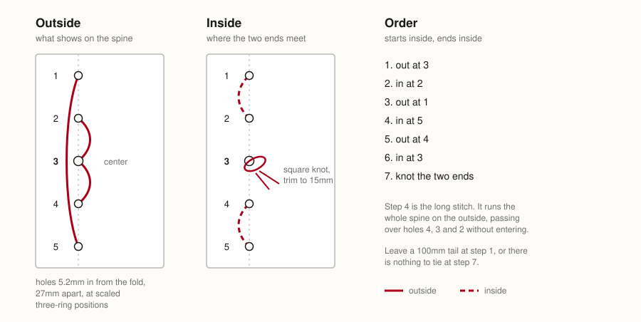
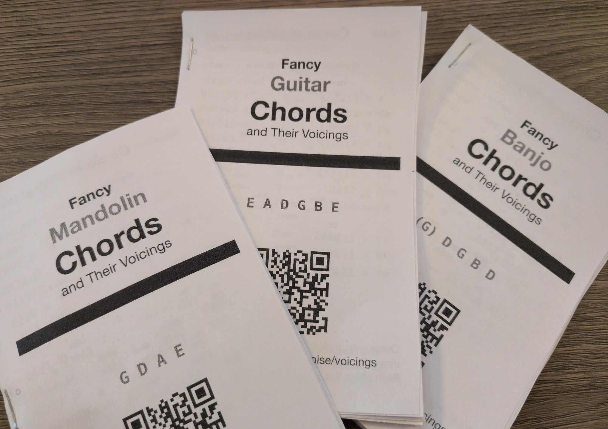

Theory
How the chords in this book are built, named and used.
Download Fancy Theory of Chords and Their Voicings
This booklet is designed to be printed, so nobody has to stare at their phone during rehearsal.
Or you can also download a copy to read on your device:
Contents
- How to Read a Chord
- The Marks in This Book
- The Chromatic Scale
- Notes and Intervals
- The Major Scale
- The Circle of Fifths
- Why Instruments Are Tuned This Way
- Nashville Numbers
- The Number Chart
- How Chords Are Built
- Triads
- Sixths
- Sevenths
- Ninths
- Altered Ninths
- Elevenths and Thirteenths
- Inversions
- Rootless Voicings
- Open and Closed Voicings
- Two Voicings for Every Chord
- Progressions
- Substitutions
- How to print, cut, and sew a copy
How to Read a Chord
Most chord books draw a box: a grid of strings and frets with a dot where a finger goes. This one prints the frets as digits. They say the same thing.
Read either the same way. The leftmost digit is the lowest string, 0 is open, x is a string you don't play, and any other number is the fret to stop it at.
A box has to be redrawn when the chord moves up the neck. A digit carries its fret with it, which is why this book fits in a pocket.
Each instrument is printed in its own color, so you can find the page by the ink. This chapter is in black: it belongs to all of them.
The Marks in This Book
Everything printed beside a chord, and what it means. Names of notes and chords are red, degrees and intervals yellow, fingerings the color of their instrument.
- 2013
- A voicing. One digit per string, lowest first, in the instrument's color.
- x
- Don't play that string.
- 0
- Play it open, no finger down.
- r
- Rootless: voiced without its root.
- i
- An inversion: something other than the root is underneath.
- C/E
- A slash chord. The chord, then the note that goes under it.
- C°
- Diminished, or Cdim.
- C+
- Augmented, or Caug.
- ♭
- Flat, also b. A semitone down.
- ♯
- Sharp, also #. A semitone up.
- ♮
- Natural. Neither sharp nor flat.
- b3
- A degree: three semitones up. The flat goes first, as a chord symbol writes it.
- Bb
- A note. The flat goes after: here it is part of the name.
The Chromatic Scale
Twelve notes, each one fret or one key apart, and then the whole thing repeats an octave higher. That is every note there is.
Five of the twelve have two names. A# and Bb are one fret, one key, one sound – which name is right depends on the key you are in, and this book heads those pages with both.
On a fretted instrument one fret is one semitone, so the chromatic scale is just walking up the neck. That is the whole reason a shape with no open strings can be slid: move every note the same number of semitones and the chord keeps its shape and changes its name.
Notes and Intervals
Twelve notes, each a semitone apart, and then it starts again. An interval is how many semitones lie between two of them. Every chord in this book is written as intervals from its root, and that is what makes a shape movable: slide it up a fret and every interval in it is unchanged.
- R
- root
- b9
- flat ninth
- 9
- ninth, or second
- b3
- minor third
- 3
- major third
- 4
- fourth, or eleventh
- b5
- flat fifth, or sharp eleventh
- 5
- fifth
- #5
- sharp fifth, or flat thirteenth
- 6
- sixth, or thirteenth
- b7
- minor seventh
- 7
- major seventh
Accidentals are written before the number, the way a chord symbol writes them: b3, not 3b.
The Major Scale
Seven of the twelve notes, in a fixed pattern of tones and semitones. Everything else on these pages is counted against it.
- 1
- then a tone
- 2
- then a tone
- 3
- then a semitone
- 4
- then a tone
- 5
- then a tone
- 6
- then a tone
- 7
- then a semitone, and you are home
The relative minor. Start the same seven notes from the sixth and you have the natural minor of that key. A minor and C major are the same notes; which one you are in is decided by where the music rests.
Why some keys are flat. A scale uses each letter once. In F that forces Bb rather than A#, because the scale already has an A. The note is one note; the spelling depends on the key it is in, which is why the same key heads one page Bb and another A#.
The Circle of Fifths
Each step clockwise adds a sharp or drops a flat, and moves the root up a fifth. Neighbors share six of their seven notes, which is why a song can wander one step either way without anything sounding wrong, and why the 5 chord sits one step clockwise of home and the 4 one step counter-clockwise.
Why Instruments Are Tuned This Way
The circle is a chain of fifths. So is almost every tuning in this book, and so is the order the sharps and flats are written in a key signature. They are the same chain, read at different speeds.
Read the flat order and you have read a bass: E A D G. Four of the seven, in order, because a fourth up is a fifth down.
- mandolin
- G D A E, fifths
- cello
- C G D A, fifths
- bass
- E A D G, fourths
- guitar
- E A D G B E, fourths with one third
- ukulele
- G C E A, fourth, third, fourth
Fifths reach far: a mandolin crosses two octaves on four courses, and its chords ask for stretches. Fourths keep the notes close, so a guitar barres six strings with one finger. Two answers to the same chain.
Nashville Numbers
Name the chords by their degree in the key instead of by letter, and a chart transposes itself. 1 4 5 is the same three chords in every key; the number chart says which letters they are.
- 1
- major
- 2
- minor
- 3
- minor
- 4
- major
- 5
- major
- 6
- minor
- 7
- diminished
1→4→5→1
Those are the chords the major scale builds on its own degrees, using only notes from the key. A number on its own means that chord; a quality after it means play that instead, and 4m in a major key is a borrowed chord rather than a mistake.
In a minor key the same seven chords are counted from the six. A minor song's home chord is the 6m of its relative major, or the 1m if the chart is written in the minor.
The Number Chart
| 1 | 2 | 3 | 4 | 5 | 6 | 7 | |
|---|---|---|---|---|---|---|---|
| C | C | D | E | F | G | A | B |
| Db | Db | Eb | F | Gb | Ab | Bb | C |
| D | D | E | F# | G | A | B | C# |
| Eb | Eb | F | G | Ab | Bb | C | D |
| E | E | F# | G# | A | B | C# | D# |
| F | F | G | A | Bb | C | D | E |
| Gb | Gb | Ab | Bb | Cb | Db | Eb | F |
| G | G | A | B | C | D | E | F# |
| Ab | Ab | Bb | C | Db | Eb | F | G |
| A | A | B | C# | D | E | F# | G# |
| Bb | Bb | C | D | Eb | F | G | A |
| B | B | C# | D# | E | F# | G# | A# |
How Chords Are Built
Take a scale degree and stack thirds on it: skip a note, take a note. Three of them is a triad, four is a seventh chord, five is a ninth, and so on up. The chord is named for the highest third.
- triad
- R 3 5
- seventh
- R 3 5 7
- ninth
- R 3 5 7 9
- eleventh
- R 3 5 7 9 11
- thirteenth
- R 3 5 7 9 11 13
R→3→5→7→9→11→13
A thirteenth chord has seven notes and you have four fingers, so the stack is a claim about which notes belong, not an instruction to sound all of them. What to leave out is on the rootless page.
Added against stacked. An add9 has no seventh: the ninth is added to a triad rather than reached by stacking past a seventh. That is the whole difference between Cadd9 and C9, and it is why the book prints both.
Triads
majorR 3 5
The default. Three notes, and the one every other chord is measured against.
mR b3 5
Lower the third a semitone. Everything else stays.
5R 5
Root and fifth, no third: neither major nor minor, so it sits over either. Loud guitars live here.
+R 3 #5
Raise the fifth. Restless – it wants to rise to the next chord's root.
dimR b3 b5
Lower the third and the fifth. Tense and unstable; usually passing through on the way somewhere.
sus2R 2 5
The third is replaced by the second, not joined by it. Open and unresolved, and neither major nor minor.
sus4R 4 5
The third replaced by the fourth. Leans hard on whatever follows it.
Sixths
R→3→5→6
6R 3 5 6
A major triad with the sixth added. Warmer and less final than a seventh: ends a song without closing it.
m6R b3 5 6
Minor triad, major sixth. The sixth stays major – that is what keeps it from being a m7b5 rooted elsewhere.
6/9R 9 3 5 6
Sixth and ninth, no seventh. All color and no pull, which makes it a good last chord.
Sevenths
R→3→5→b7
7R 3 5 b7
Major triad, minor seventh. The blues chord, and the one that pulls to the fourth.
maj7R 3 5 7
Major triad, major seventh. Still: it is not pulling anywhere.
m7R b3 5 b7
Minor triad, minor seventh. The workhorse of the two chord.
dim7R b3 b5 6
Minor thirds all the way up. Symmetrical, so one shape names four chords, three frets apart.
m7b5R b3 b5 b7
A diminished triad with a minor seventh. The two chord of a minor key. Also called half-diminished.
7sus4R 4 5 b7
A seventh with the fourth in place of the third. Suspends the pull without canceling it.
7sus2R 9 5 b7
The same idea with the second. Not voiced in this book.
7b5R 3 b5 b7
Flatten the fifth of a seventh. It shares three notes with the 7b5 a tritone away, which is why the two stand in for each other.
7#5R 3 #5 b7
Raise it instead. Reads as an altered dominant, and sits well before a minor chord.
Ninths
R→3→5→b7→9
9R 9 3 5 b7
A seventh with the ninth stacked on. The seventh has to be there; without it you have an add9.
maj9R 9 3 5 7
Major seventh plus ninth. On four strings the root is the first thing to go.
m9R 9 b3 5 b7
Minor seventh plus ninth.
add9R 9 3 5
The ninth added to a plain triad, no seventh. Written 2 in some books and add2 in others.
madd9R 9 b3 5
The same over a minor triad.
Altered Ninths
R→3→5→b7→b9
7b9R b9 3 5 b7
Dominant with the ninth flattened. Four of its five notes are a diminished seventh.
7#9R b3 3 5 b7
Dominant with the ninth raised – the same pitch as a minor third, which is why it sounds like major and minor at once.
9b5R 9 3 b5 b7
A ninth with the fifth flattened. Not voiced in this book.
9#5R 9 3 #5 b7
A ninth with the fifth raised. Not voiced in this book.
9sus4R 9 4 5 b7
A ninth suspending the fourth. Not voiced in this book.
m11R 9 b3 4 5 b7
Minor ninth with the eleventh on top. Six notes, so something is always dropped.
Elevenths and Thirteenths
R→3→5→b7→9→11→13
11R 9 3 4 5 b7
The eleventh over a dominant. The third is usually dropped: a natural eleventh sits a semitone above it and the two fight.
13R 9 3 5 6 b7
The thirteenth over a dominant. The same note as the sixth, an octave up, over a chord that has a seventh.
m13R 9 b3 5 6 b7
The same over a minor seventh.
maj13R 9 3 5 6 7
And over a major seventh.
7#11R 3 b5 5 b7
The raised eleventh, which does not fight the third. The lydian dominant sound.
Only the guitar has strings enough to voice these, so they appear on its pages and nowhere else.
Inversions
A chord is its notes, in any order. Put a note other than the root at the bottom and you have an inversion: the same chord, sitting differently.
- root
- C E G
- first
- E G C
- second
- G C E
- C/E
- the chord, a slash, and the note that goes underneath it
- i
- this book's mark for a voicing whose lowest note is not the root
C→C/E→C/G
Written C/E and C/G – the chord, a slash, the note underneath. Use them to give the bass a line to walk: C, C/B, Am descends by step where three root positions would jump.
On four courses the lowest string is often not the root whether you meant it or not. Where that happens the voicing is marked i. It is not a fault. It is a warning that the bass note is doing something, and that if someone else is playing the root you may be hearing a chord neither of you named.
Rootless Voicings
Four strings, six notes. Something goes. The order to drop them in:
- first
- 5, which says nothing the root has not
- then
- R, if a bass is playing it
- never
- 3 or b3: they decide major or minor
- never
- b7 or 7: they decide which seventh
- r
- this book's mark for a voicing with no root
A voicing with no root is marked r. In a band it is often the better chord: the bass has the root, and what you have left carries the harmony. Alone it sounds like a different chord, because it is one.
It is why Cmaj9 and Em7 can be four identical notes.
Open and Closed Voicings
Two ways to arrange the same notes. A closed voicing packs them into a single octave, stacked as tightly as they go. An open voicing lifts one of the inner notes an octave and lets the chord breathe across a wider span.
Closed voicings turn to mud low down, where the overtones of notes a third apart collide. Open ones give each note room, and they make the move to the next chord easier, because a note that is already spread has somewhere to go.
On a fretted instrument you get what the tuning gives you. A mandolin or a cello is tuned in fifths, so its shapes come out open whether you meant them or not. A guitar's barre chords are close voicings with an octave doubled on top. There is not much choice in it.
Two Voicings for Every Chord
On a piano there is nothing but choice, so the piano pages print two voicings for every chord. The first is closed, the notes in order from the root. The second is the spread voicing: root and fifth low for the left hand, then the color above it with the third on top, which is where the ear goes looking for it.
| C | C E G | closed |
|---|---|---|
| C G C E | open | |
| Cmaj7 | C E G B | closed |
| C G B E | open | |
| C9 | C E G Bb D | closed |
| C G Bb D E | open |
Split them at the hands. The left takes the root and the fifth, the right takes what is left. That is why the spread voicings are written root-and-fifth first: the break in the list is where your hands part.
The spread voicings are the ones the notebook was written from, and the ones a pianist actually reaches for.
Progressions
Written in numbers, so they work in any key.
- 1 4 5
- Almost everything. Folk, blues, country, most hymns.
- 1 5 6m 4
- The four chords a great many pop songs are made of.
- 2m 5 1
- The turn jazz is built on. The 2m and the 5 share three notes.
- 1 6m 4 5
- Fifties doo-wop.
- 6m 4 1 5
- The same four chords, starting from the minor.
- 1 4 1 5
- Twelve-bar blues in outline. Make all three sevenths.
1→5→6m→4
The pull of 5 to 1 is the engine. It comes from the tritone inside the seventh chord: the third and the flat seventh are six semitones apart, and both want to move a semitone.
Substitutions
Chords that share notes can stand in for one another.
- relative
- 1 and 6m share two notes. So do 4 and 2m.
- tritone
- Any 7 chord can be replaced by the 7 a tritone away. They share the third and the seventh, swapped.
- sixths
- A 6 will stand in for a maj7 at the end of a phrase, and lands softer.
- sus
- A sus4 before the chord it resolves to buys a beat.
- dim7
- Four chords at once: every three frets is the same shape and the same notes, so one grip covers four roots.
2m→b2 7→1
None of this is a rule. It is a list of places where two chords are close enough that an ear will follow you.
How to print, cut, and sew a copy
- Print the 4-up PDF for your paper, double-sided, flipped on the long edge, at 100%. Don't let the printer fit to page.
- Cut along the gray lines, which mark the four 3.5in by 5.5in rectangles. On US Letter that is three cuts down and one across. On A4 it is three each way, because the sheet is 18mm taller than two pages.
- Stack the rectangles in the order they came off the sheet: top-left, top-right, bottom-left, bottom-right.
- Staple the sheets together along the edge, or
- Punch holes through the marks along the edge with an awl and sew a five-hole pamphlet stitch:

Examples of some printed and stapled booklets:
